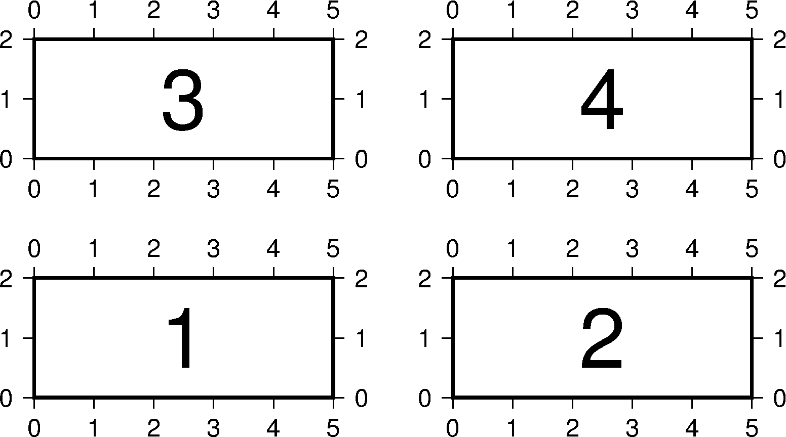

7.8 -X 和 -Y 选项¶
在纸张上画图时，首先要确定原点在哪里。对于刚拿到的纸而言，最原始的原点位于纸张左下角。
很多情况下，想要自己控制底图原点的位置， -X 和 -Y 选项就用于移动底图原点。
-X 和 -Y 的用法是一样的，所以下面仅以 -X 选项为例介绍其用法，其语法为:
-X[a|c|f|r][<xshift>[<u>]]
其中 <xshift> 新原点相对于当前原点的X方向偏移量， <u> 为偏移量的单位。
在偏移量之前加上不同的字符表示不同的含义：
-X2i或-Xr2i：在原底图原点的基础上沿X方向偏移2英寸得到新底图原点-Xa5c：在原底图原点的基础上沿X方向偏移5厘米得到临时底图坐标，当前命令执行完成后，底图原点复原到原底图原点-Xc3c：在纸张中心的基础上沿X方向偏移3厘米得到新底图原点-Xf4c：在纸张左下角的基础上沿着X方向偏移4厘米得到新底图原点
在不显式使用 -X 和 -Y 的情况下，可以这样认为：
- 若命令中未使用
-O选项，即第一个绘图命令，相当于-Xr1i -Yr1i，即第一个绘图命令的绘图原点是距离纸张左下角(1i, 1i)处，这样做是为了给底图左边和下边的刻度和标注信息留空间 - 若命令中使用了
-O选项，则相当于-Xr0 -Yr0，即不移动底图原点 - 若使用了
-X和-Y但不指定偏移量，则使用之前命令的偏移量
说明：
- 第一个绘图命令的默认偏移量由 MAP_ORIGIN_X 和 MAP_ORIGIN_Y 控制
- 当PS文件中有多个底图时才需要使用
-X和-Y选项，不要仅仅为了在某个地方加几个文字就使用这两个选项
-X 和 -Y 选项的用法介绍起来有些难度，多试试就好，下面举个简单的例子:
gmt psbasemap -JX5c/2c -R0/5/0/2 -B1 -K > test.ps
gmt psbasemap -J -R -B1 -K -O -X7c >> test.ps
gmt psbasemap -J -R -B1 -K -O -X-7c -Y4c >> test.ps
gmt psbasemap -J -R -B1 -K -O -X7c >> test.ps
上图用四个 psbasemap 命令绘制了四张底图，绘图效果如下：

{kind=link}
图 7.18 -X 和 -Y 移动绘图原点
解释：
- 第一个命令的绘图原点位于纸张左下角
(1i,1i)处，绘制底图1 - 第二个将绘图原点右移了7 cm，绘制底图2
- 为了绘制底图3，第三个命令将底图左移了7 cm，并上移4 cm
- 第四个命令在底图3的基础上右移7 cm，绘制底图4